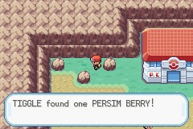

บทที่ 5 / 29
ภูเขาโคสุคิมิ<Mt.Moon>
❖
ก่อนถึงภูเขาโคสุคิมิ ข้างโปเกมอนเซนเตอร์ จะมีก้อนหินอยู่3ก้อน ให้คุยกับช่องว่างตรงกลาง จะได้เบอร์รี่มา ฟรีๆ 1ผล (และจะได้ Berry Pouch มาโดยอัตโนมัติ)

พอเข้าไปก็จะเจอเทรนเนอร์ ก็ให้สู้ซะ เก็บค่าประสบการณ์เอาไว้ และมี TM09 Bullet Seed, TM46 Thief กับMoon Stone ให้เก็บ ก่อนจะถึงทางออก จะพบกับซากฟอสซิล2ชิ้นขวางทางอยู่ ให้เราเลือกอันใดอันหนึ่ง ด้านซ้ายจะเป็นฟอสซิลคาบุโตะ<Dome Fossil> ด้านขวาจะเป็นฟอสซิลออมไนต์<HelixFossil> ให้เราเดินต่อไปเรื่อยๆ จนออกมา ตรงตามถนนหมายเลข4 จะมี TM05 Roar ให้เก็บ และมีคนสอนท่า Mega Punch กับ Mega Kick แล้วเข้าเมืองฮานาดะซิตี้ (ส่วนเเอดมินเอาฟอสซิลคาบุโตะนะ)